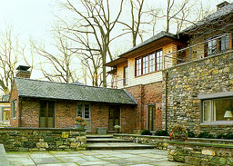
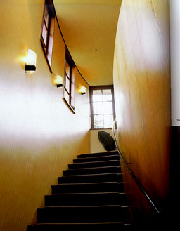
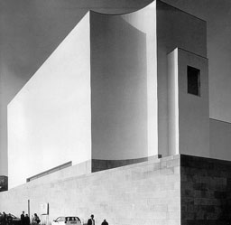
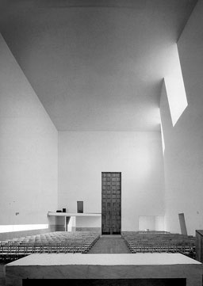

Reservoir House, Westchester Country, New York, 1994
1100 Architect

1100 Architect
Pilar Viladas & Pat Morton |
The original structure was a stone cottage for
a pump attendant. The building has been enlarged to make it suitable
to function as a house. The architect has tried to harmonise
old and new materials while they will still be recognisable as
old and new as can been seen on the left photograph. The overhang
of the roof gives unity to the house. On the picture on the right
the stairs can be seen lightened by daylight and artificial light.
The windows are placed in a canvas on the same height while the
artificial light follows the height of the stairs. |
 |
Church of Marco de Canavezes, Near Porto, Portugal, 1990-1996
Álvaro Siza

GA Document 50
A.D.A EDITA Tokyo |
The plan of the church is a rectangular nave,
30 meters long and 16.5 meters wide and high. As can be seen
on the right photograph three big windows are placed in a convex
side-wall. The windows are 3.5 meters wide and 5 meters high
and are connected to the ceiling. From the other wall a 16 meters
long and 0.5 meters high window illuminates the nave. This window
is placed close to floor-level . Together the windows illuminate
the church in a equal way as can be seen on the right picture.
|
 |